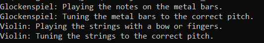

Inheritance program 23 - Write a Java program to create an abstract class Instrument with abstract methods play() and tune(). Create subclasses for Glockenspiel and Violin that extend the Instrument class and implement the respective methods to play and tune each instrument.
//Instrument.java
abstract class Instrument {
public abstract void play();
public abstract void tune();
}
//Glockenspiel.java
class Glockenspiel extends Instrument {
@Override
public void play() {
System.out.println("\tGlockenspiel: Playing the notes on the metal bars.");
}
@Override
public void tune() {
System.out.println("\tGlockenspiel: Tuning the metal bars to the correct pitch.");
}
}
//Violin.java
class Violin extends Instrument {
@Override
public void play() {
System.out.println("\tViolin: Playing the strings with a bow or fingers.");
}
@Override
public void tune() {
System.out.println("\tViolin: Tuning the strings to the correct pitch.");
}
}
//Main.java
public class Inheritance_23 {
public static void main(String[] args) {
Instrument glockenspiel = new Glockenspiel();
Instrument violin = new Violin();
glockenspiel.play();
glockenspiel.tune();
violin.play();
violin.tune();
}
}
Output
